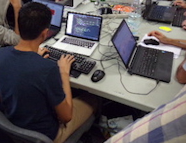

Révéler les talents à travers l’innovation numérique, pédagogique et sociale
Des formations intensives et ouvertes à tous gratuites, qualifiantes (6 mois) ou certifiantes et rémunérées (CQP, titres professionnels entre 9 et 12 mois).
Et prioritairement ouvertes aux décrocheurs/NEETs, demandeurs d’emplois, allocataires de minimas sociaux et les profils sous-représentés dans les métiers techniques numérique.
Pour des métiers en tension développement web, référents numériques (admin sys, webmaster, CM...), datartisan...

L’APPROCHE PÉDAGOGIQUE DE SIMPLON
• 20% de théorie - 80% de pratique
• Pédagogie par projets (“learning by doing”)
• Mise en situation de présentation, d’assistance et d’enseignement (“learning by teaching”)
• Pédagogie active (“learning by «débrouillez-vous»”)
• Mise en oeuvre des méthodes agiles dans la mise en oeuvre des projets et l’organisation en équipe
• Responsabilisation, d’acculturation à une posture d’autonomie et de proactivité
Tu me dis, j'oublie. Tu m'enseignes, je me souviens. Tu m'impliques, j'apprends.
Benjamin Franklin
RÉFÉRENTIELS DE FORMATION
Développeur.se web
Créer en autonomie des sites web et des applications web/mobile.
Maîtriser certaines méthodes : agile, Test Driven Development, pair programming...
Se servir d’outils tels que: Git, Github, etc...
Formation qualifiante / 6 mois.
Référent numérique
Formation à la gestion de projet numérique via les méthodes agiles.
Administration systèmes et réseaux.
Formation qualifiante / 3 mois.
Webmastering.
Web marketing et communication digitale.
Support utilisateur.
Outils de productivité, BDD et GED.
Autres référentiels en cours de création.
FTTH/fibre, cybersécurité.
3D (Dassault Systèmes : Catia et Solidworks).
Analytics et prédictif (IBM Watson), technico-commercial IT.